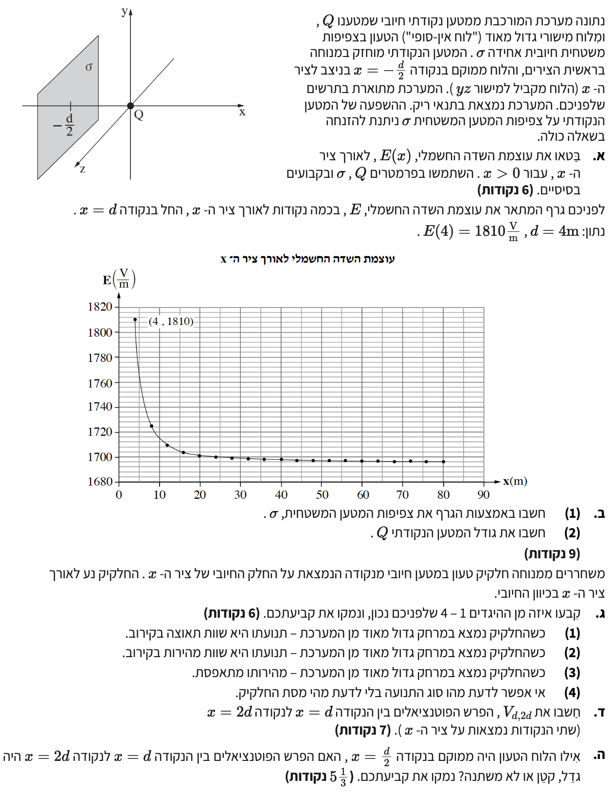

פתרון מודרך, צעד-אחר-צעד

מערכת המורכבת משני גופים טעונים: מטען נקודתי בעל מטען חיובי \( Q > 0 \) המוחזק במנוחה בראשית הצירים, ולוח מישורי גדול מאוד (אינסופי) בעל צפיפות מטען משטחית חיובית \( \sigma > 0 \) הממוקם בנקודה \( x = -\frac{d}{2} \) וניצב לציר ה-\( x \).
ביטוי לעוצמת השדה החשמלי השקול \( E(x) \) לאורך ציר ה-\( x \) החיובי (עבור \( x > 0 \)).
אנו משתמשים בעקרון הסופרפוזיציה, הקובע שהשדה השקול הוא הסכום הווקטורי של השדות מכל המטענים במרחב. נשתמש בנוסחאות מדף הנוסחאות:
עבור כל נקודה על ציר ה-\( x \) החיובי (\( x > 0 \)), נבחן את כיוון השדה מכל מקור בנפרד:
המטען הנקודתי \( Q \) חיובי, ולכן הוא מייצר שדה חשמלי המצביע החוצה ממנו, כלומר בכיוון החיובי של ציר ה-\( x \). גודל השדה הוא \( E_Q = k\frac{Q}{x^2} \).
הלוח הטעון בעל צפיפות מטען \( \sigma \) חיובית גם הוא מייצר שדה המצביע החוצה ממנו. מכיוון שהנקודות הנבדקות נמצאות מימין ללוח, גם השדה של הלוח מצביע בכיוון החיובי של ציר ה-\( x \). גודלו קבוע והוא \( E_\sigma = \frac{\sigma}{2\varepsilon_0} \).
אם ממירים לקבוע קולון \( K \) (או \( k \)), משתמשים בקשר \( K = \frac{1}{4\pi\varepsilon_0} \), ולכן מתקבל גם \( \frac{\sigma}{2\varepsilon_0} = 2\pi K\sigma \).
מכיוון ששני השדות פועלים באותו כיוון (כיוון ציר \( x \) החיובי), נוכל פשוט לחבר את הגדלים שלהם כדי למצוא את גודל השדה השקול:
נתון גרף של עוצמת השדה החשמלי כפונקציה של המיקום \( x \). מתוך הנתונים מפורש שגודל המרחק הוא \( d = 4 \text{ m} \) ועוצמת השדה בנקודה זו היא \( E(4) = 1810 \frac{\text{V}}{\text{m}} \).
מתוך התבוננות בגרף נראה כי השדה הולך ויורד עם המרחק אך מתייצב על אסימפטוטה אופקית (ערך קבוע) של \( E(\infty) = 1696 \frac{\text{V}}{\text{m}} \).
כמו כן אנו יודעים שקבוע הדיאלקטריות של הריק הוא \( \varepsilon_0 = 8.85 \cdot 10^{-12} \frac{\text{C}^2}{\text{N}\cdot\text{m}^2} \) וקבוע קולון הוא \( k = 9 \cdot 10^9 \frac{\text{N}\cdot\text{m}^2}{\text{C}^2} \).
בסעיף 1 נחשב את צפיפות המטען המשטחית \( \sigma \). בסעיף 2 נחשב את גודל המטען הנקודתי \( Q \).
נשתמש במשוואת השדה שפיתחנו בסעיף הקודם: \( E(x) = k\frac{Q}{x^2} + \frac{\sigma}{2\varepsilon_0} \)
נשתמש בהיגיון מתמטי של גבולות: כאשר המרחק \( x \) גדל מאוד ושואף לאינסוף, הביטוי התלוי ב-\( x \) בריבוע במכנה שואף לאפס.
כאשר אנו מתרחקים מאוד מהמערכת (כלומר \( x \to \infty \)), התרומה של המטען הנקודתי לשדה \( k\frac{Q}{x^2} \) הולכת וקטנה עד שהיא מתאפסת לחלוטין. במרחק רב כזה, השדה היחיד שנותר הוא השדה הקבוע של הלוח האינסופי, אשר אינו תלוי במרחק. על פי הגרף ניתן לראות כי ערך השדה במרחקים גדולים מתייצב על \( 1696 \frac{\text{V}}{\text{m}} \), ולכן:
נכפיל את שני האגפים ב-\( 2\varepsilon_0 \) ונציב את הערך של הקבוע (כל היחידות כבר ב-MKS, אין צורך בהמרה):
כעת אנו יודעים שהאיבר הקבוע של שדה הלוח שווה ל-1696. נשתמש בנקודה הידועה \( x = 4 \text{ m} \) שבה השדה הכולל הוא 1810:
נחסר 1696 משני האגפים:
נכפול ב-16 ונחלק ב-\( 9 \cdot 10^9 \):
חלקיק טעון בעל מטען חיובי (\( q > 0 \)) משוחרר ממנוחה מנקודה כלשהי על החלק החיובי של ציר ה-\( x \). החלקיק נע לאורך הציר בכיוון החיובי.
לקבוע איזה מבין ארבעת ההיגדים בנוגע לתנועת החלקיק במרחק גדול מאוד מהמערכת הוא הנכון, ולנמק.
כדי לנתח את התנועה, נשרטט תחילה תרשים כוחות (FBD) עבור החלקיק הטעון:
ראינו בסעיף ב' שכאשר החלקיק נמצא במרחק גדול מאוד מן המערכת, עוצמת השדה החשמלי כמעט ואינה משתנה ושווה לערך הקבוע שמייצר הלוח בלבד, קרי \( E \approx 1696 \frac{\text{V}}{\text{m}} \).
על החלקיק פועל כוח חשמלי בכיוון השדה (ימינה), וגודלו הוא \( F_E = qE \). מכיוון שגם מטענו של החלקיק \( q \) וגם השדה החשמלי \( E \) הם קבועים באזור זה, הרי שהכוח הפועל על החלקיק הוא קבוע.
לפי החוק השני של ניוטון, מתקיים \( \sum F = ma \). עבור כוח שקול יחיד שהוא קבוע וחלקיק בעל מסה \( m \) קבועה, אנו מקבלים שהתאוצה \( a = \frac{qE}{m} \) היא בהכרח קבועה.
מכאן אנו מסיקים שגודל המהירות של החלקיק גדל בקצב אחיד.
שתי נקודות על ציר ה-\( x \): הנקודה הראשונה במרחק \( x = d = 4 \text{ m} \) והשנייה במרחק \( x = 2d = 8 \text{ m} \). ערכי המטען והשדה ידועים מהסעיפים הקודמים.
לחשב את הפרש הפוטנציאלים \( V_{d,2d} \) המוגדר כהפרש בין הפוטנציאל ב-\( x=d \) לפוטנציאל ב-\( x=2d \), קרי \( V(d) - V(2d) \).
אנו מסתמכים על עקרון הסופרפוזיציה של פוטנציאלים: הפוטנציאל הכולל בנקודה שווה לסכום האלגברי של הפוטנציאלים שיוצר כל מקור בנפרד.
הפרש הפוטנציאלים הכולל שווה לסכום הפרשי הפוטנציאלים שנוצרים על ידי המטען הנקודתי והלוח האינסופי:
1. תרומת המטען הנקודתי:
2. תרומת הלוח האינסופי:
השדה שיוצר הלוח הוא אחיד ושווה ל- \( E_\sigma = 1696 \frac{\text{V}}{\text{m}} \). השינוי בפוטנציאל לאורך מרחק \(\Delta x \) בשדה אחיד ניתן על ידי \( \Delta V = -E \Delta x \).
כאשר אנו נעים מהנקודה \( x=d \) אל הנקודה \( x=2d \), ההעתק שלנו הוא \( \Delta x = 2d - d = 8 - 4 = 4 \text{ m} \).
נכפול במינוס 1 כיוון שאנו מחפשים את ההפרש בכיוון ההפוך \( V_\sigma(d) - V_\sigma(2d) \):
3. סיכום התרומות:
מניחים כעת שהלוח הטעון הוזז ממקומו המקורי אל נקודה חדשה הממוקמת ב-\( x = \frac{d}{2} \) (כלומר ב-\( x = 2 \text{ m} \)).
לקבוע האם הפרש הפוטנציאלים \( V_{d,2d} \) (בין הנקודות \( x=4 \) ל-\( x=8 \)) גדל, קטן, או לא משתנה בעקבות הזזת הלוח, ולנמק.
אנו מתבססים על המאפיין הייחודי של לוח אינסופי - השדה החשמלי שהוא יוצר נתון על ידי \( E = \frac{\sigma}{2\varepsilon_0} \).
נשים לב שהשדה הזה תלוי אך ורק בצפיפות המטען \( \sigma \) ואינו תלוי כלל במרחק מהלוח, כל עוד אנו נשארים באותו הצד של הלוח.
הלוח הוזז למיקום \( x = 2 \text{ m} \). הנקודות שביניהן אנו מודדים את הפרש הפוטנציאלים נמצאות במיקומים \( x = 4 \text{ m} \) ו-\( x = 8 \text{ m} \).
גם לאחר הזזת הלוח, התחום שבין הנקודות המדוברות (\( 4 \le x \le 8 \)) נמצא כולו מימין למיקומו החדש של הלוח (\( x=2 \)).
מכיוון שהשדה החשמלי של לוח אינסופי במרחב שמימינו הוא אחיד (קבוע בגודלו ובכיוונו) ללא תלות במרחק מהלוח, עוצמת השדה שמייצר הלוח באזור שבין \( d \) ל-\( 2d \) נותרה בדיוק כפי שהייתה קודם (שווה ל-1696).
מאחר שגם השדה שמייצר המטען הנקודתי בנקודות אלו לא השתנה, סך השדה החשמלי בכל נקודה בתחום \( [d, 2d] \) נשאר זהה לחלוטין. כיוון שהפרש הפוטנציאלים תלוי אך ורק בשדה באזור שבין שתי הנקודות, הוא אינו משתנה.